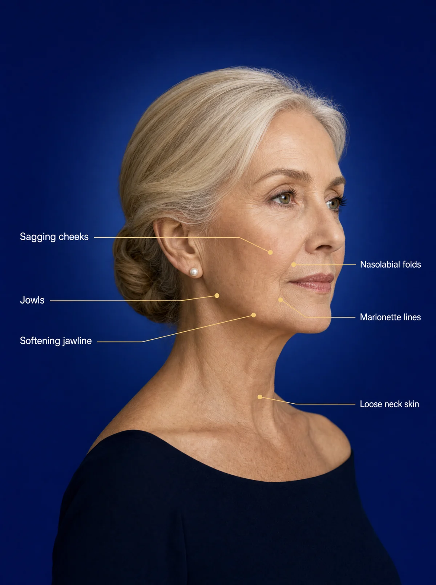
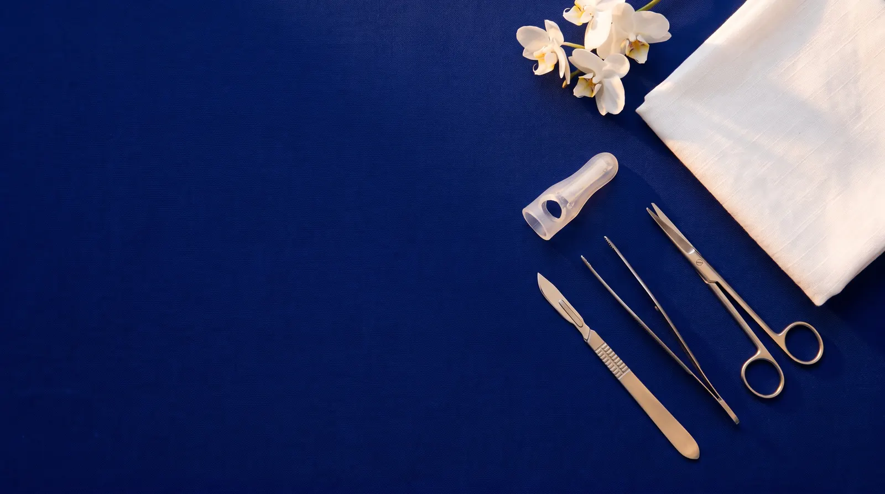
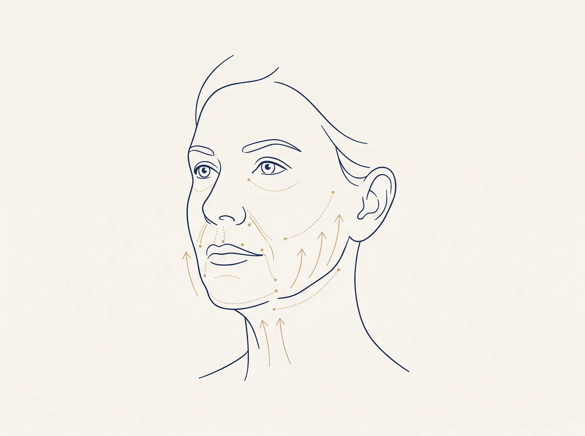
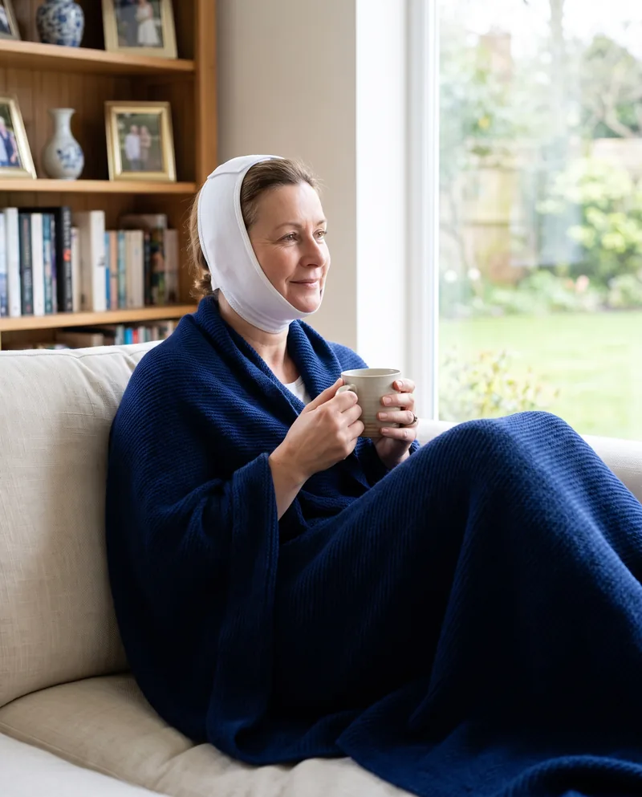
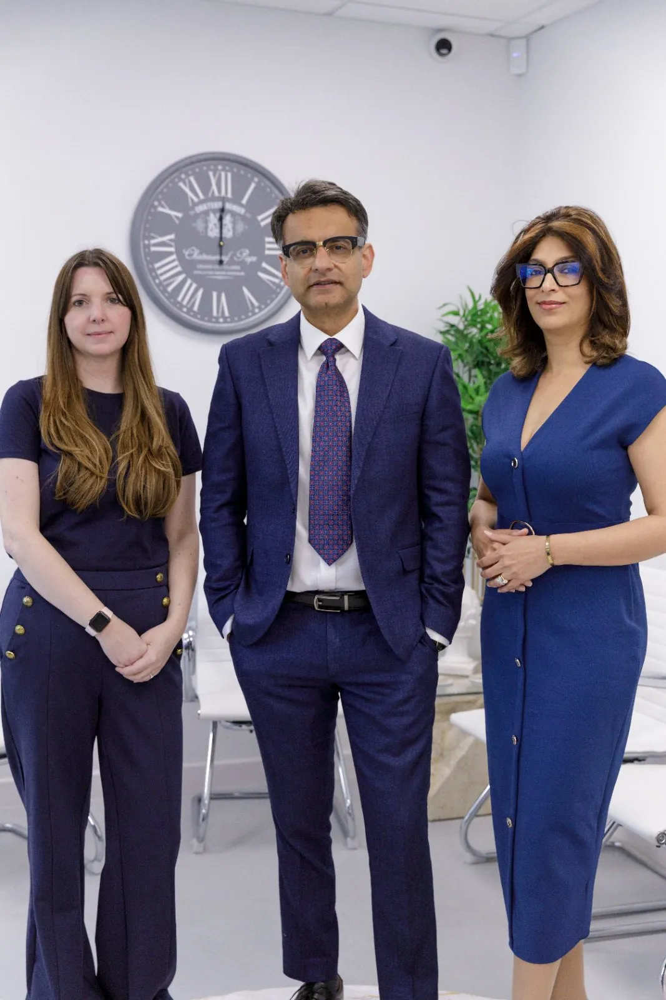

Look as rested as you feel with a Mini Facelift
- Lifts sagging cheeks, jowls and the jawline
- Natural looking and long-lasting results
- Less invasive than a full facelift, with a quicker recovery
- Performed only by Mr Supriya, trained with Dr Andrew Jacono
- Consultations on Harley Street, London


Told in their own words
-
 Google
GoogleFrom start to finish of my facelift, Mr Supriya was a very professional and caring consultant and surgeon. He thoroughly discussed the procedure with me, explaining and reassuring me about all the questions I raised. Within three weeks of surgery I was able to return to work and my family and friends. I am delighted with the natural youthful look I now have and everyone says how well I look. Thank you Mr Supriya.
-
From the consultation, care and operation I experienced from Mr Supriya and his team was 5 star all the way! I highly recommend him and his team. After my operation I've had no issues, no pain and recovery was really quick. If needed I will be contacting him again.
-
Very professional and reassuring, from initial appointment to follow up appointments following surgery. Would highly recommend.
-
He explained how my surgery would take place kindly. He gave feedback after my surgery. The team that put me to sleep was very friendly; they released my stress and worry before they put me to sleep. Thank you for all of them.
-
Mr Supriya is a kind and caring surgeon whose work produces natural looking results.
-
I am so grateful to Mr Supriya for all he has done for me. I greatly appreciate his kindness and consideration throughout.
Fresher, firmer and still unmistakably them
Swipe through each patient to see every angle, then move on to the next pair. All photographs are authentic and unretouched.
"I am delighted with the natural youthful look I now have and everyone says how well I look."A.C., facelift patient
For the face in the mirror that looks more tired than you feel
Perhaps it is softening along the jawline, jowls that were not there a few years ago, or deeper lines from the nose to the mouth. You still feel like yourself, but your face has started to tell a different story.
A mini facelift targets the mid and lower face. Rather than simply pulling the skin, Mr Supriya lifts and repositions the deeper tissues through small incisions around the ears, for a fresh, natural result with a shorter recovery than a full facelift.

Lift what has dropped, keep everything that makes you you
A mini facelift lifts the deeper layers of the face, so the result looks rested and refreshed rather than tight or "done".
- Lift sagging cheeks and the mid-face
- Soften jowls along the jawline
- Redefine the jawline
- Ease nasolabial folds
- Soften marionette lines
- Restore youthful tightness and smoother skin
- Natural, long-lasting results
- A quicker recovery than a full facelift

What to expect, in plain terms
- Surgery time
- 3 to 4 hours
- Anaesthesia
- Local anaesthetic or mild sedation
- Hospital stay
- One night
- Bandages
- Headband for 1 to 2 daysCompression garment for 1 week
- Recovery
- 1 to 2 weeks
- Exercise
- After 3 to 4 weeks
- Results
- Initial results after 1 weekFull results in 2 to 3 months
- Cost
- £20,000 all inclusiveConsultation £200
You may be a good candidate if
- You have moderate sagging in the mid-face, jowls or neck
- You would like natural-looking results without a full facelift
- You are looking for a less invasive way to treat loose skin
- You are in good overall health
- You have realistic expectations about what surgery can achieve
Six steps to a fresher face
From your first consultation to your recovery at home, here is what happens during a mini facelift with Mr Supriya.
Consultation
Mr Supriya assesses your facial structure, talks through your goals and confirms whether a mini facelift is the right choice for you.
- You will discuss
- Your goals, your health and any previous treatments
- You leave with
- A personal plan and a clear, fixed quote
Anaesthesia
The procedure is usually performed under local anaesthetic or mild sedation, so you are comfortable throughout.
- Typical approach
- Local anaesthetic or mild sedation
- Surgery time
- 3 to 4 hours
Incisions
Small incisions are carefully placed around the ears, where they are easy to hide and heal discreetly.
- Placement
- Around the ears
- Aim
- Minimal visible scarring
Repositioning
The underlying muscles and tissues are gently lifted and repositioned to restore a more youthful contour to the cheeks, jowls and jawline.
- Treats
- Mid-face descent, jowls and a softening jawline
- Result
- A natural lift that does not look pulled
Closure
The incisions are closed meticulously to support good healing and keep scarring to a minimum.
- Afterwards
- A supportive headband for 1 to 2 days
- Then
- A compression garment for 1 week
Recovery
You stay with us for one night, then go home with detailed instructions for caring for your incisions, managing swelling and returning to normal activities.
- Back to normal
- Usually 1 to 2 weeks
- Exercise
- After 3 to 4 weeks
Refreshed, not changed
The mini facelift is performed by only a few surgeons, because it is technically demanding and calls for intensive training and excellent surgical skill.
Natural rejuvenation
Subtly lifting the deeper facial tissues gives a fresh, natural appearance.
Minimal downtime
Its less invasive nature means a quicker recovery than a traditional facelift.
Targeted and long-lasting
It treats moderate skin laxity, sagging skin and jowls where they need it most, with results that last for years.
The changes patients bring to us most

Sagging jowls
Loose skin and tissue that gather below the jawline and blur its outline.
Mid-face descent
Cheeks that have dropped over time, leaving the face looking flatter and more tired.
Nasolabial folds
Deepening lines running from the sides of the nose to the corners of the mouth.
Marionette lines
Lines from the corners of the mouth towards the chin that can make you look sad or stern.
A softening jawline
Loss of the crisp angle between the jaw and the neck.
Early neck laxity
Mild looseness of the upper neck, which can be treated alongside the lower face.
Early signs of ageing
For patients who want to act early, before a full facelift would be needed.


We stay with you every step of your recovery
- Complimentary follow-up consultations for a full year
- A take-home recovery pack
- A dedicated patient care coordinator you can contact at any time
- Regular calls from our nurses while you heal
- A free consultation for any other procedure
- The first nightA one night hospital stay, so you are looked after from the start
- 1 to 2 daysA supportive headband, followed by a compression garment for a week
- 1 weekYour initial results begin to show
- 1 to 2 weeksMost patients are back to their everyday routine
- 3 to 4 weeksReturn to exercise
- 2 to 3 monthsYour full results
Mr Mrinal Supriya
"A good surgical result does not shout. I judge success by subtlety. My role is to protect identity, not to replace it."
A double fellowship trained Consultant ENT and Head and Neck Surgeon, Mr Supriya has dedicated his career to surgery of the face and neck. He founded British Face Clinic to focus solely on facial surgery, and he personally conducts every consultation, operation and follow-up.
Alongside private practice he remains an NHS consultant, having served as Divisional Director of Surgery and Clinical Director for Head and Neck Services at University Hospitals of Northamptonshire. He previously held consultant posts at St George's, London, and Ninewells Hospital, Dundee, trained in Melbourne and Michigan, and spent time with renowned facial plastic surgeon Dr Andrew Jacono.
Small clinic, senior surgeon, no hand-offs
Natural results, very few revisions
We aim for a face that looks rested, never "done". Our revision rate is exceptionally low.
Trained by the best
Mr Supriya trained with Dr Andrew Jacono, one of the leading facelift surgeons in the USA.
International training
Experience from top hospitals in the UK, Australia and the USA.
An NHS leader
Mr Supriya leads advanced surgical services at a major NHS hospital.
 The team who will look after you
The team who will look after youA teacher of surgeons
He trains Oxford Deanery surgeons, keeping his practice at the leading edge.
One named contact
Unlimited access to a nominated team member before, during and after surgery.

Start with a free phone call, then meet Mr Supriya
Your first conversation is a free phone call with our specialist team. If you would like to go further, you can meet Mr Supriya in person or online.

We will talk about
- Your goals and what you hope to see
- Medical conditions, allergies and treatments
- Medications, supplements, alcohol and smoking
- Any previous surgery
Mr Supriya will
- Assess your general health and any risk factors
- Take photographs
- Explain your surgical options and recommend a plan
- Talk through likely outcomes, risks and possible complications
You will also
- Preview possible results with digital imaging, where appropriate
- Receive a clear quote and payment options
One fixed fee, everything covered
No hidden costs, no separate invoices and no surprises after surgery. Every mini facelift is performed by Mr Supriya himself.
A fixed, all-inclusive fee covering your surgeon, anaesthetist, hospital stay and every follow-up appointment.
Deductible from your surgery when you go ahead, with follow-up consultations included.
Spread the cost with interest-free finance for the first 12 months.
- Quick online application
- A response in minutes
Surgeon's fee
Your surgery and all post-operative follow-up appointments. In the unlikely event of an emergency or complication, any further surgical care is included too.
Anaesthetist's fee
Included in your total package price.
Theatre and hospital stay
Your hospital stay and the medication you take home on discharge, including your facelift garment.
The questions everyone asks
Something we have not covered? Call us on 07590 817036.

What is the difference between a mini facelift and a traditional facelift?
A mini facelift is less invasive than a traditional facelift. It focuses on lifting and tightening the mid and lower face through smaller incisions, which means a quicker recovery and minimal downtime.
How long does the operation take?
Usually 3 to 4 hours. It is typically performed under local anaesthetic or mild sedation.
Will I need to stay in hospital?
Yes, for one night, so we can look after you closely straight after your surgery.
Where will the scars be?
Small incisions are placed around the ears, where they are easy to hide. They are closed meticulously to help them heal well and keep scarring to a minimum.
What can I expect during the healing process?
Healing after a mini facelift is usually quicker than after a traditional facelift. You can expect some swelling and bruising, which usually settle within a few weeks. You will wear a headband for 1 to 2 days and a compression garment for a week, and most people are back to everyday life within 1 to 2 weeks.
When can I exercise again?
After 3 to 4 weeks. Mr Supriya will guide you on when to restart based on how you are healing.
When will I see my results?
You will see initial results after about a week, with your full results in 2 to 3 months as the swelling settles.
Can a mini facelift be combined with other facial surgery?
Yes. A mini facelift can be combined with other procedures, such as a neck lift, for a more complete rejuvenation. Mr Supriya will talk you through the best options for your goals.
How does a mini facelift compare to non-surgical treatments?
Non-surgical treatments can give temporary improvements. A mini facelift gives more significant and longer-lasting results because it treats the deeper layers of tissue.
What is a one stitch facelift?
A one stitch facelift is a type of mini lift that uses minimal incisions and focuses on lifting the mid-face. It is a quick procedure with a short recovery, suited to people looking for subtle enhancement.
Who is a good candidate?
People in good overall health with moderate sagging of the mid-face, jowls or neck, who want natural-looking results without a full facelift and have realistic expectations.
Four places to see us

Tell us a little about you and we will call you back
A friendly member of our team will answer your questions, explain the next steps and arrange your consultation with Mr Supriya if you would like one.
